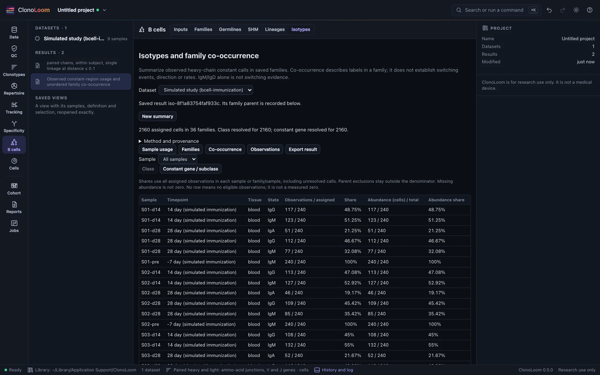
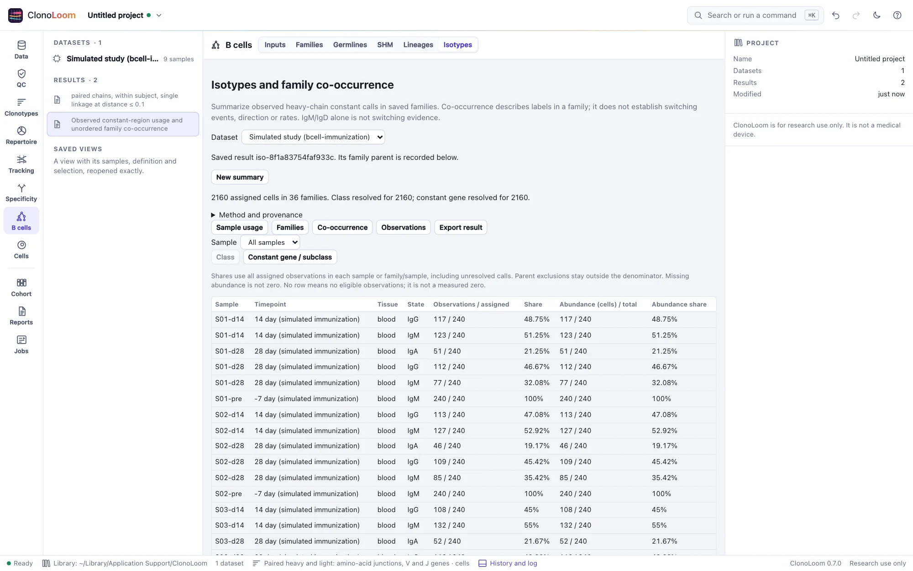

Isotypes and co-occurrence
B cells → Isotypes summarizes sample and family usage from saved families, keeping observed labels distinct from inferred switching events.
Summarize saved families


Save a thresholded Families result, open B cells → Isotypes, select the parent and choose Summarize isotypes. The parent's membership, subject boundaries and QC choices remain fixed. Constant calls do not require germline alignments or a tree. The artificial immunization guide includes this analysis.
Class and constant-gene usage
Each assigned observation contributes once: a sample-scoped cell for single-cell data, or a heavy source row for bulk data. Duplicate heavy contigs do not multiply cell abundance; light chains do not define isotype. Choose Class or Constant gene / subclass. Allele ties collapse. Same-class subclass ties can resolve IgG while leaving the constant gene unresolved. Broad IGHG/IGHA calls identify class only.
All retained heavy calls must agree at the reported resolution. Missing, unsupported and conflicting calls remain explicit. Pseudogenes and unsupported species labels are not silently mapped to functional isotypes. IGHM/IGHD candidate ties are unresolved calls, not evidence of coexpression.
Observation shares include all assigned observations in that sample or family/sample, including unresolved calls. Parent-excluded observations stay outside the denominator. Observation totals count cells or heavy-chain rows; the abundance column separately labels the parent count unit. Abundance is separate: a missing count makes its bucket and the group's total unavailable. Known zero is preserved; a zero denominator has no abundance share. No table row means no eligible observations, not a measured zero. Timepoint and tissue are pinned labels, not pooled biological replicates.
Inspect family observations
Families shows observation counts, class/gene coverage, resolved constant genes and descriptive evidence. Select a family to see its sample usage, then open Family observations. Selecting an observation shows every heavy and light C call retained by the parent, source hash and line. The complete observation table also retains parent exclusions.
Co-occurrence counts each family once for each unordered pair of resolved constant genes. Select a pair to inspect its supporting families. Pairs overlap and must not be added. Families with at least one resolved gene are a coverage count, not completely sampled families. IgM/IgD-only co-occurrence is explicitly not switching evidence.
Observed labels are not switching events
These results do not infer events, direction, timing, ancestral isotypes, rates or significance. They impose no species-specific genomic ordering. Different constant labels in a family do not establish a particular transition. Missing calls and incomplete sampling also limit conclusions about absence. Interpretation depends on input annotation accuracy and the chosen family threshold.
Save, cite and export
Saved results retain the family checksum and sample annotations. Editing labels affects a new summary, not a saved result. Export result includes complete usage, family, co-occurrence, observation and source CSVs; full JSON; manifest and notice. Blank numeric CSV values are missing; measured zero is 0. Exports contain all rows regardless of display filters and follow the normal source-access and data-use conditions.
Constant calls follow the AIRR schema and IMGT nomenclature. Horns et al. (2016) provides biological context; Hoehn et al. (2022) provides context for distinguishing observed traits from phylogenetic inference. Counting and ambiguity rules are ClonoLoom choices; neither publication's switching statistic is implemented.
An independent truth-file calculation agrees for all 2,160 default artificial cells, 36 families and 466 usage rows. Each unordered IGHM/IGHG1/IGHA1 pair occurs in all 36 families. This validates descriptive bookkeeping, not recovery of historical switching events or accuracy on biological repertoires.